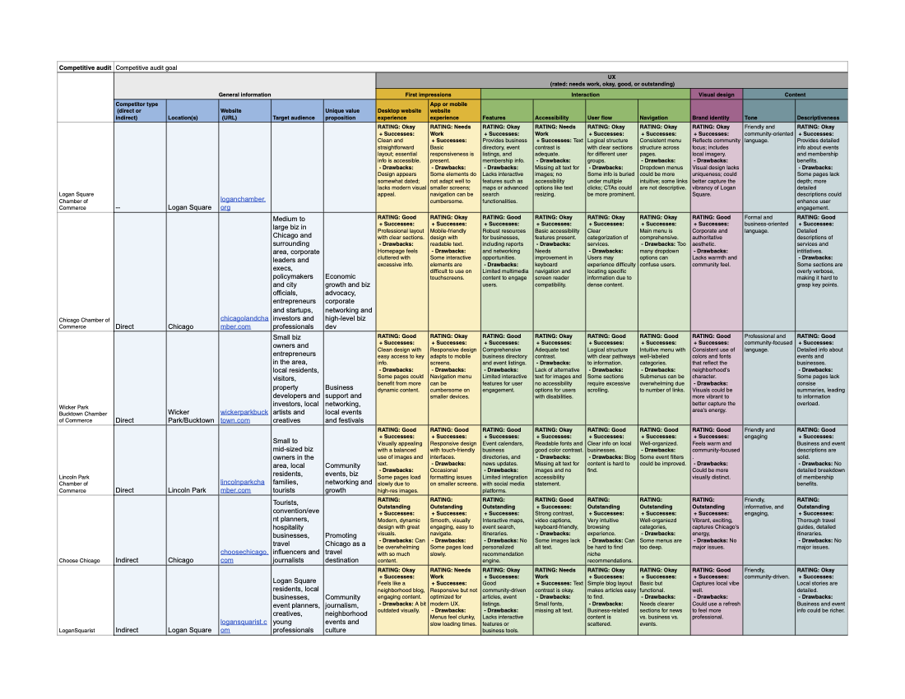

Working within stakeholder constraints, I focused on actionable research methods that could quickly inform design decisions.
Competitive Analysis
I analyzed 3 direct competitors (local chambers of commerce) and 2 indirect competitors (community organizations and local tourism sites) to understand:
- Common navigation patterns and content organization
- How other sites handle event promotion (like farmers markets)
- Visual trends that signal trustworthiness in civic organizations
Key Insights
Most chamber websites fell into two problematic categories—either overly corporate and intimidating for small businesses, or visually outdated with poor information architecture.
Critical Success Patterns
- Event visibility drives engagement
- Visual balance matters
- Navigation simplicity wins
No existing chamber site successfully combined approachable community feel with structured, accessible information architecture - creating a clear opportunity for a solution that serves both small businesses and community members effectively.

User Persona
Based on stakeholder input and community demographics, I developed a primary persona to represent a typical Chamber website visitor: small business owners looking for networking opportunities, resources, and community connection.